Tutorial: JASP setup, normality, and z-scores
JASP tutorial, PocketStat, normality check walkthrough, z-scores in JASP, Q-Q plot, output annotation
Tutorial JASP setup, normality, and z-scores
Acquisition
1 Tutorial briefing
⏱ 10 min
Review variable settings, output options, and the steps needed to create clear plots and summary tables.
Investigation
2 Normality checks
⏱ 35 min
Explore histograms, boxplots and summary statistics for selected variables from the teaching dataset.
Production
3 Standardised scores
⏱ 40 min
Interpret z-scores and explain what counts as typical, unusual or extreme in context.
Production
4 Output annotation
⏱ 25 min
Add a short note that links the plot and z-score output to a management decision or warning.
Assessment
5 Share and upload
⏱ 10 min
Share one annotated output with a partner and upload the improved version.
Have the chapter text available during this session. This session runs the analysis and assumes you have read all four pages and worked the Try It exercises. Keep a calculator on the desk: step 10 asks you to check the first z-score against your own arithmetic.
Every step below includes a JASP tab and a PocketStat tab. Pick the tool you are using and stay on that tab. The step numbers, the outputs, and the answers are the same either way.
PocketStat has no Q-Q plot, so step 8 differs between the two tabs. The other 14 steps reach the same figures by either route.
Activity 1: Tutorial briefing (10 minutes)
You will work with four variables from the teaching dataset: Waiting_Time_Mins, Age, Satisfaction and Spending. Chapter 2 identified four different shapes among them. This session asks you to verify each one.
Before running anything, set the output options, so every table you produce today uses the same precision.
Step 1. Open the software and load the teaching dataset
Launch JASP, open the file menu, then Open, Computer, Browse, and choose DMM_Teaching_Data_Full.csv. Confirm the data view runs to row 200 and 26 columns.
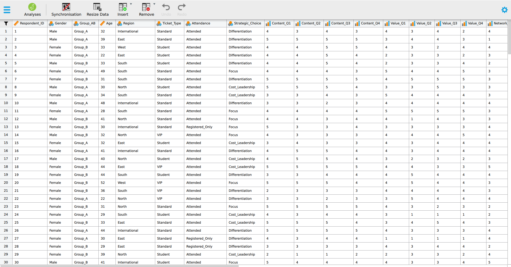
Open PocketStat at https://mohammedalisharafuddin.github.io/pocketstat/. On the Data tab, open the upload card and choose DMM_Teaching_Data_Full.csv. Confirm the data summary card reports 200 rows and 26 columns.
Step 2. Set the output options
Open Preferences from the menu at the top left and choose Results. Tick Fix the number of decimals and set it to 3. Tick Display exact p-values. The settings apply to every table from now on, including tables already in the output.
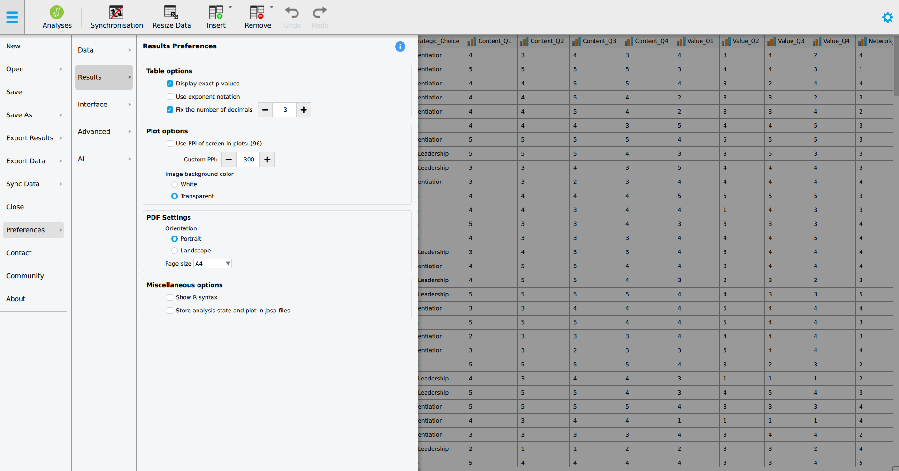
PocketStat reports every figure to three decimal places, so there is nothing to set. Tap Learn on the bottom bar and read the entries for Distribution shape and Z-scores & empirical rule. They are brief and explain what each output row means.
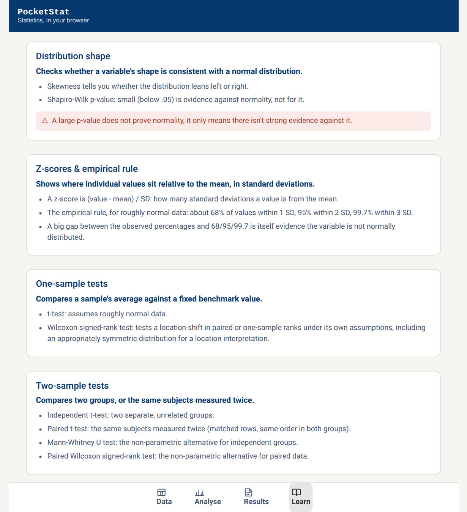
Step 3. Check the four variables are read as scale
Scroll the data view to Age, Satisfaction, Spending and Waiting_Time_Mins and check each header shows the ruler icon for scale. All four are measurements. Every check today requires them to be scale variables.
Scroll the variables card to the same four and check each is listed as scale. Change any that are not, using the cleaning card as in chapter 1.
Activity 2: Normality checks (35 minutes)
Working in pairs, run the five checks from part 3 on all four variables, and record a verdict for each.
Step 4. Open the analysis and move the four variables in
Click Descriptives, then Descriptive Statistics, and move Waiting_Time_Mins, Age, Satisfaction and Spending into Variables.
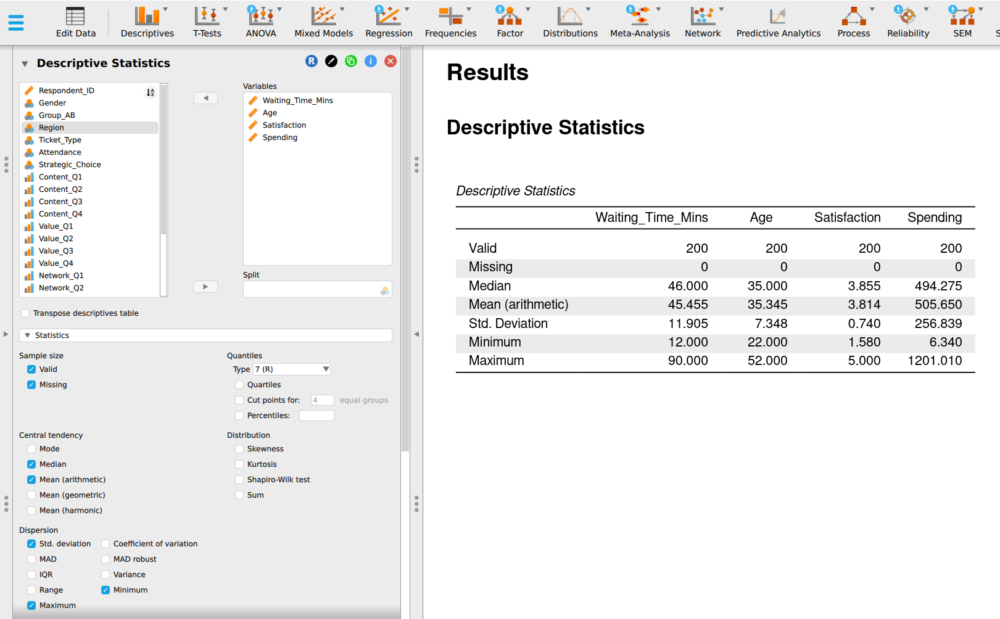
Tap Analyse, choose Distribution shape from the technique list, and choose all four variables. PocketStat runs the technique on each in turn.
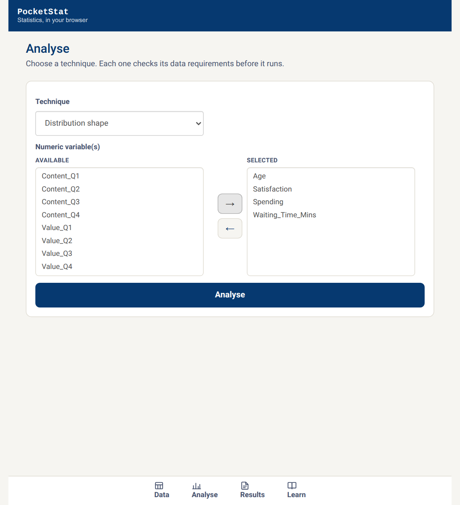
Step 5. Ask for skewness, kurtosis and the Shapiro-Wilk test
Open Statistics. Under Central tendency, tick Mean (arithmetic) and Median. Under Dispersion, tick Std. deviation, Minimum and Maximum. In the Distribution group, tick Skewness, Kurtosis and Shapiro-Wilk test. JASP adds the standard error of skewness and of kurtosis automatically. Valid and Missing are ticked already, so the table also reports 200 cases and 0 missing for each variable. The table on the right fills in as you tick, and the screenshot in step 6 shows the ticked options and the finished table together.
Run the analysis. Distribution shape always reports skewness, its standard error, the skewness ratio, and the Shapiro-Wilk \(W\) and p-value. Kurtosis is missing from this output. Copy the kurtosis figures from Table 2.21’s hint row when you fill in the table below.
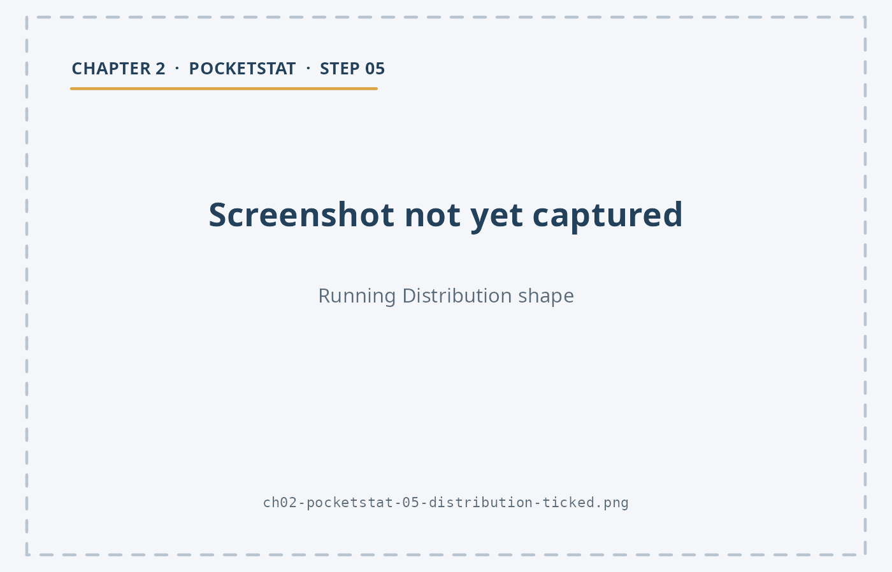
Step 6. Read the distribution table
Read one column at a time. For Waiting_Time_Mins you should see a skewness of 0.112 with a standard error of 0.172, an excess kurtosis of 0.482 with a standard error of 0.342, a Shapiro-Wilk \(W\) of 0.993, and a p-value of 0.480. If your figures differ, check the variable type first. The columns follow the order in which you moved the variables into the box.
Exact p-values appear in scientific notation, in the row P-value of Shapiro-Wilk. The number after \(\times 10\) says how many places to move the decimal point to the left:
| JASP shows | Move the point | Reads as | Report as |
|---|---|---|---|
| \(4.795 \times 10^{-1}\) | 1 place | 0.4795 | \(p = .480\) |
| \(8.244 \times 10^{-3}\) | 3 places | 0.008244 | \(p = .008\) |
| \(1.879 \times 10^{-3}\) | 3 places | 0.001879 | \(p = .002\) |
| \(1.334 \times 10^{-6}\) | 6 places | 0.000001334 | \(p < .001\) |
Any p-value smaller than 0.001 is reported as \(p < .001\). The Report as column drops the zero before the decimal point, following the APA style set out on the reference page.
![The JASP window. On the left, the Descriptive Statistics panel has Age, Satisfaction, Spending and Waiting_Time_Mins in the Variables box, with Valid, Missing, Median, Mean (arithmetic), Std. deviation, Minimum, Maximum, Skewness, Kurtosis and Shapiro-Wilk test ticked. On the right, the output table has the four variables across the columns and rows for valid and missing counts, median, mean, standard deviation, skewness and its standard error, kurtosis and its standard error, Shapiro-Wilk, the p-value of Shapiro-Wilk in scientific notation, minimum and maximum. For Waiting_Time_Mins it reads a median of 46.000, a mean of 45.455, a skewness of 0.112 and a p-value of 4.795 times 10 to the minus 1.](../assets/images/screenshots/ch02/ch02-jasp-06-distribution-table.png)
Open Results and read the table for each variable. For Waiting_Time_Mins you should see a skewness of 0.110 with a standard error of 0.173, a z (skewness) of 0.635, and a Shapiro-Wilk p of 0.4795. The skewness differs from JASP’s in the third decimal, for the reason given in part 1.
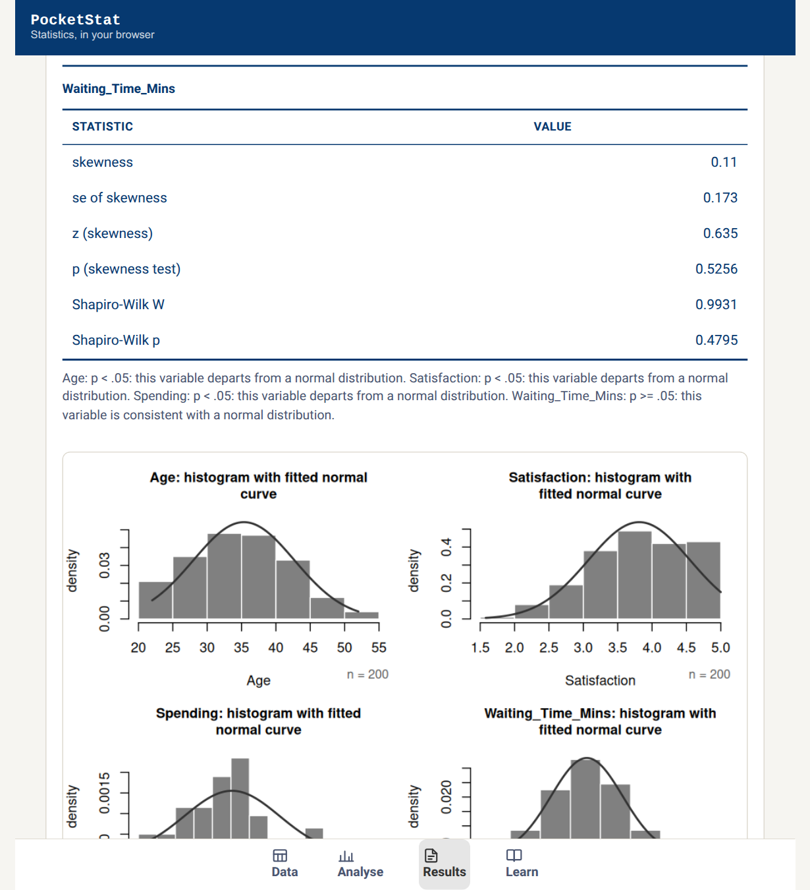
Step 7. Draw the histograms with a density curve
Open Basic plots and tick Distribution plots, then tick Display density beneath it. Each variable gets a histogram with a smooth curve drawn over it.
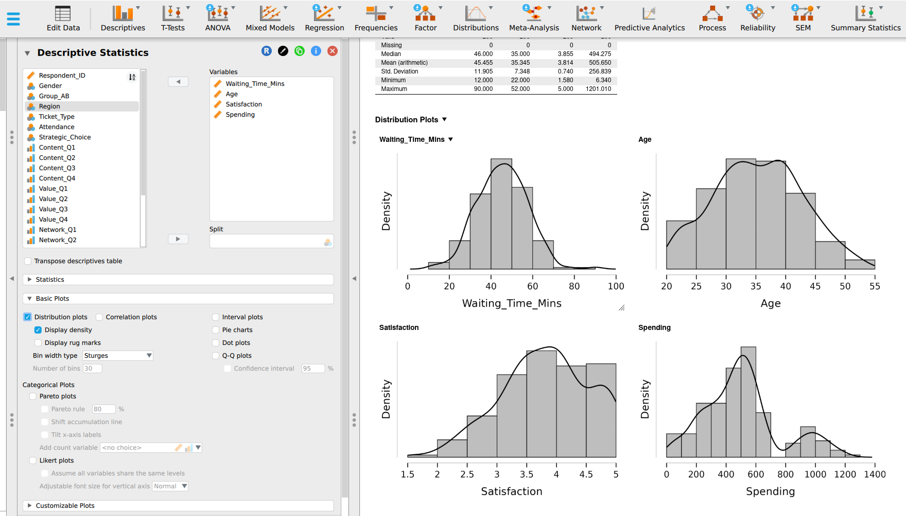
The plots on the Results tab are histograms with a fitted normal curve drawn over each. Where the bars rise above the curve or fall short of it, the data depart from the normal shape.
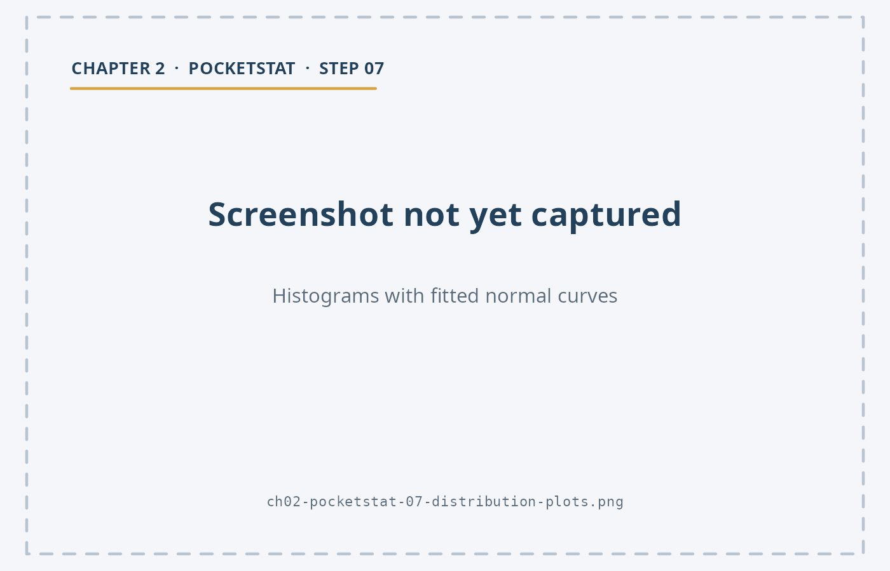
Step 8. Draw the Q-Q plots
In Basic plots, tick Q-Q plots. Compare each plot with the patterns in Table 2.15. Look for points on the line, a curve, an S-shape, a flat row at one end, or a staircase.
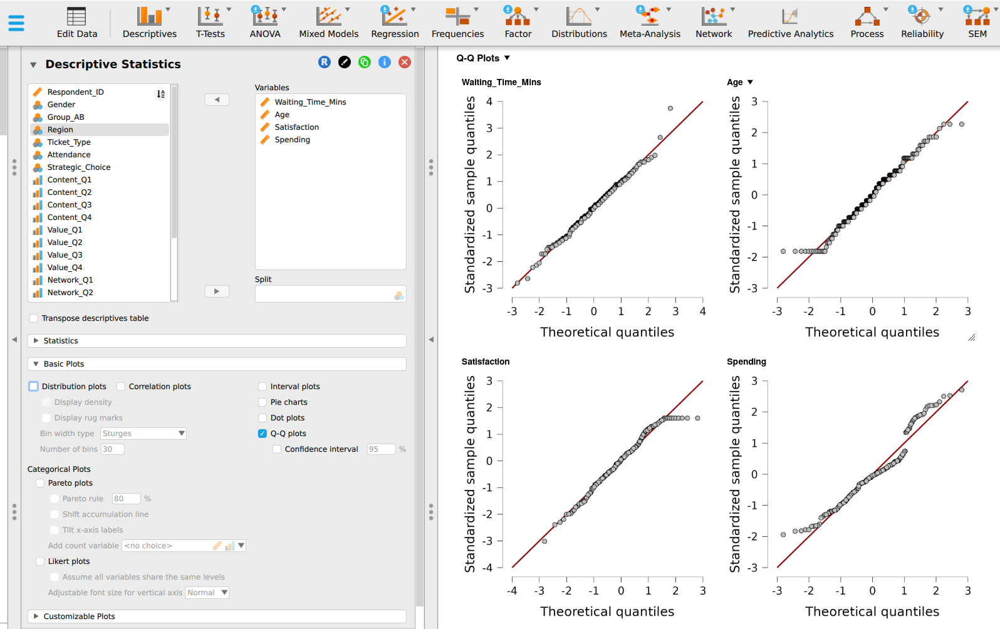
PocketStat has no Q-Q plot. In its place, read the skewness ratio, z (skewness), beside the histogram from step 7. Record “not available” in the Q-Q row of your table, and note that your verdict rests on four checks.
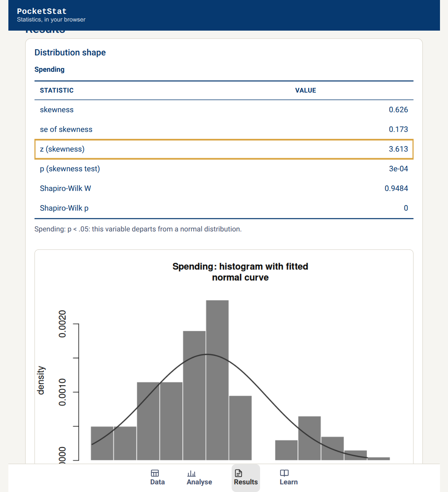
Step 9. Draw the boxplots and label the distant cases
Open Customizable plots, tick Boxplots, and tick Label outliers. Each case beyond the fences appears as a point with its row number beside it.
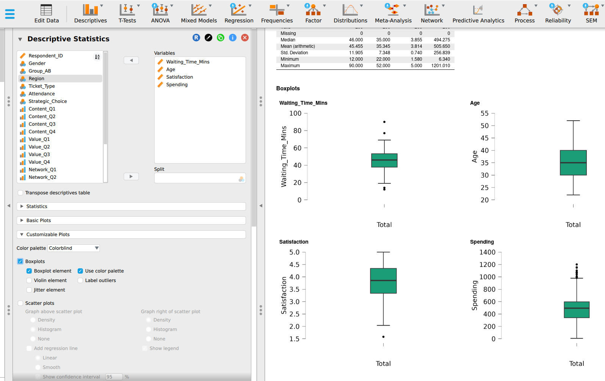
Choose Descriptive statistics and pick one variable at a time. A scale variable chosen on its own gets a boxplot beside its summary table.
Record what you found. Fill every cell from your own output, then give each variable a one-line verdict.
| Check | Waiting_Time_Mins |
Age |
Satisfaction |
Spending |
|---|---|---|---|---|
| Histogram | ||||
| Mean against median | ||||
| Skewness ratio | ||||
| Kurtosis ratio | ||||
| Q-Q plot | ||||
| Shapiro-Wilk p | ||||
| Verdict | ||||
| Hint for PocketStat users: excess kurtosis and its standard error | 0.482, 0.342 | -0.599, 0.342 | -0.397, 0.342 | 0.195, 0.342 |
Then answer two questions with your partner:
Ageis symmetric and fails the Shapiro-Wilk test. Which of your other checks explains the failure, and does it matter for a planning estimate?- Which of the four variables could you use with the normal model to estimate the share of customers above a threshold? Defend your choice in one sentence each.
Activity 3: Standardised scores (40 minutes)
This activity works on Waiting_Time_Mins, the variable closest to normal.
Step 10. Create the z-scores
Click the + at the right-hand end of the column headers to add a computed column. Name it Wait_z, choose the R formula box, and enter:
(Waiting_Time_Mins - mean(Waiting_Time_Mins)) / sd(Waiting_Time_Mins)The formula is the z-score from part 2, \(z = (x - \bar{x}) / s\), written for the whole column at once:
Waiting_Time_Minsis \(x\), each customer’s own waitmean(Waiting_Time_Mins)is \(\bar{x}\), 45.455 minutessd(Waiting_Time_Mins)is \(s\), 11.905 minutes. R’ssd()divides by \(n - 1\), so it gives the same sample standard deviation JASP reported in step 6.
JASP works through the column one row at a time. Respondent 1 waited 28 minutes and gets \((28 - 45.455) \div 11.905 = -1.466\), the value you calculated by hand in worked example 2.5. Check that row 1 of Wait_z reads -1.466 before you go on.
Leave its type as Scale. A z-score is a measurement with equal gaps, so scale is correct.
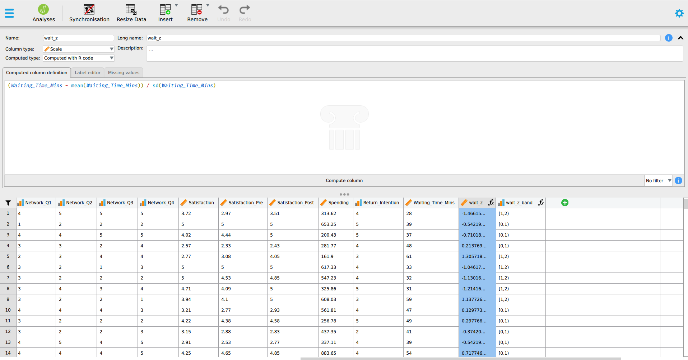
Tap Analyse and choose Z-scores & empirical rule, then pick Waiting_Time_Mins and run it. PocketStat applies the z-score formula from part 2, \(z = (x - \bar{x}) / s\), to every row, using the column’s mean of 45.455 and standard deviation of 11.905.
It reports a summary of the z-scores, set out in the next three steps, and shows no z-score for each row. To find one customer’s z-score, apply the formula yourself, the way worked example 2.5 does.
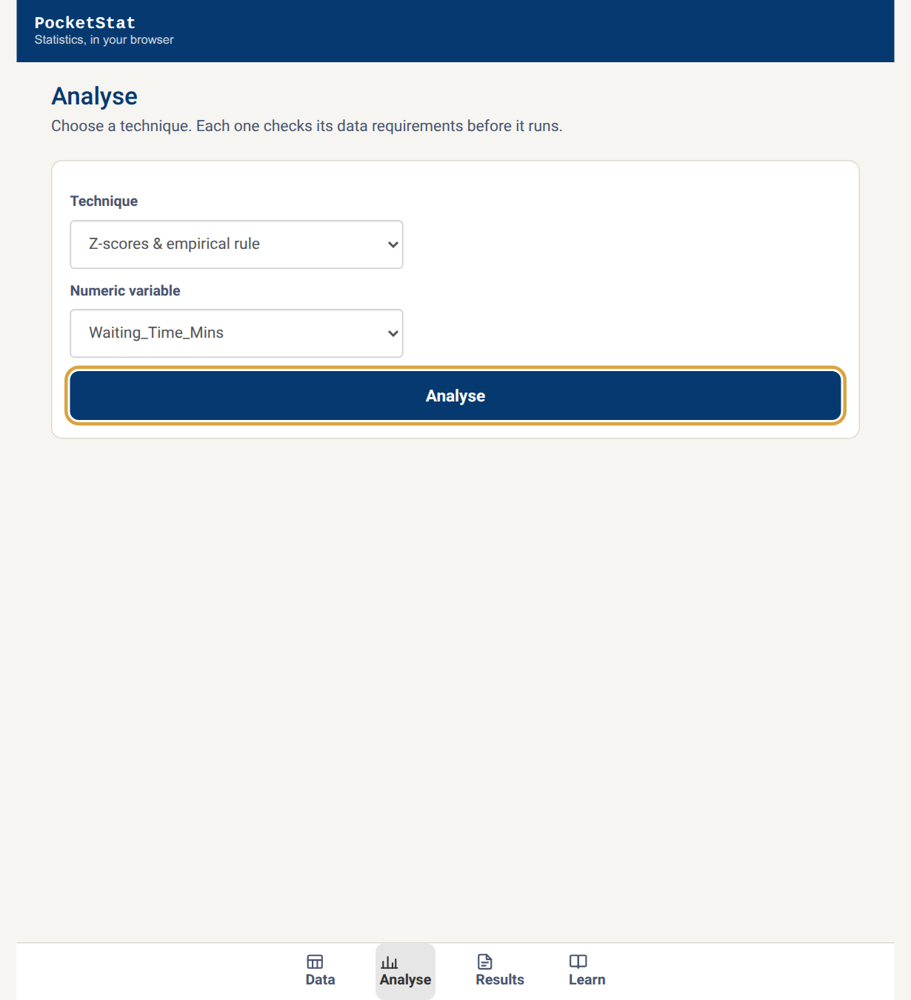
Step 11. Check the standardising worked
Run Descriptive Statistics on Wait_z with mean, standard deviation, minimum and maximum ticked. The standard deviation should be 1.000, the minimum -2.810 and the maximum 3.742.
The mean should be zero. JASP may print it as a tiny number in scientific notation, such as \(2.588 \times 10^{-16}\). Moving the decimal point 16 places gives 0.0000000000000002588, which is zero apart from the computer’s rounding. A standardised column always has a mean of zero.
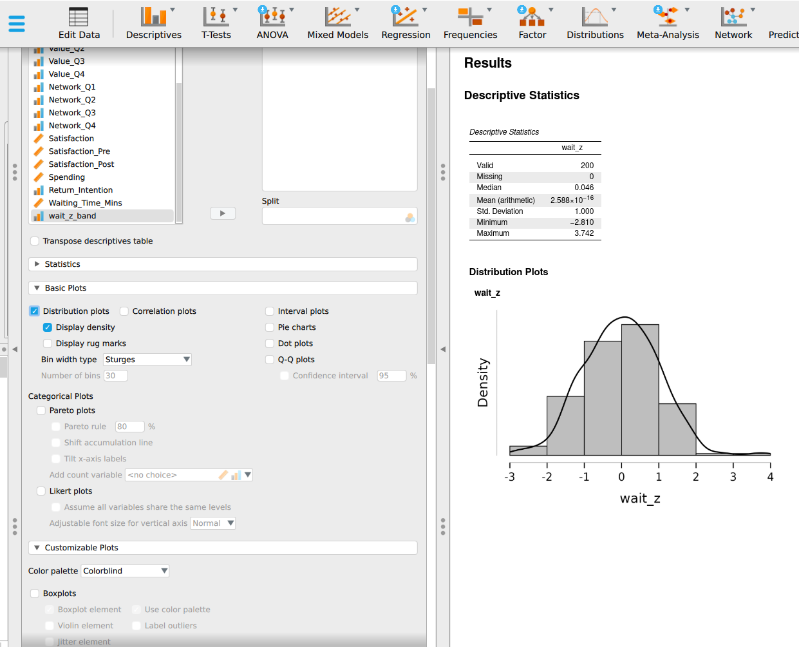
On Results, read the first rows: n is 200, the mean 45.455 and the standard deviation 11.905. These are the two numbers used to build every z-score in the column.
Step 12. Compare the data with the empirical rule
Add a second computed column named Wait_z_band, using the R formula box:
cut(abs(Wait_z), breaks = c(0, 1, 2, 3, 10), right = FALSE)Set its type to Ordinal, then run Descriptive Statistics on it with Frequency tables ticked. The cumulative percent column gives the share within one, two and three standard deviations: 66.5, 96.5 and 99.5.
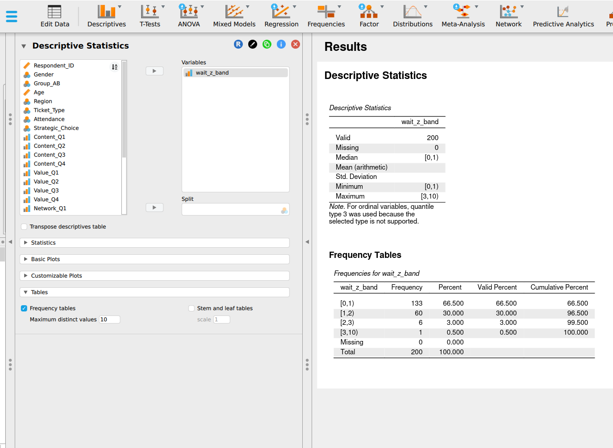
Read the three percentage rows. Within one standard deviation: 66.5. Within two: 96.5. Within three: 99.5. PocketStat prints the empirical rule’s 68, 95 and 99.7 beside each for comparison.
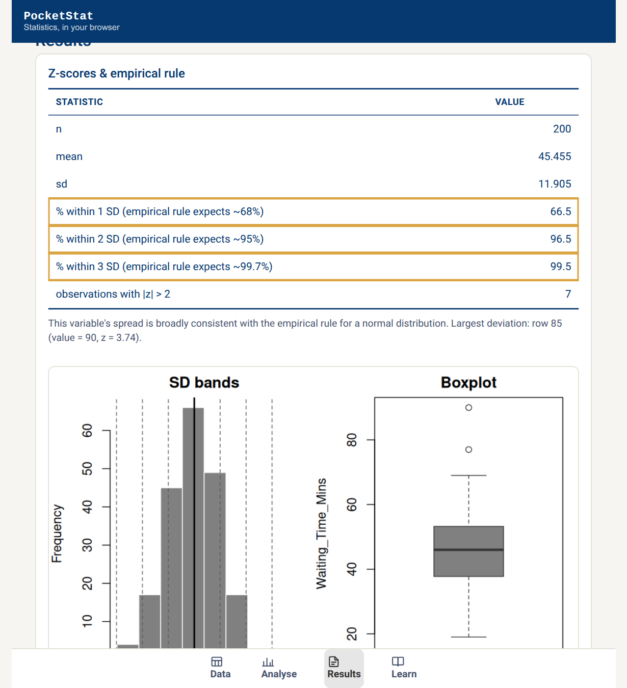
Step 13. Find the unusual and extreme cases
Run Descriptive Statistics on Wait_z. Under Customizable plots, tick Boxplots and Label outliers, as in step 9.
The vertical axis is now in z-scores, so each point’s distance from the mean reads straight off it. Four points sit beyond the whiskers, each labelled with its row number:
- Row 85, above 3, is the extreme case: a wait of 90 minutes at \(z = 3.74\).
- Row 58, between 2 and 3 above the mean, is unusual: 77 minutes at \(z = 2.65\).
- Rows 149 and 189, between 2 and 3 below the mean, are unusual: 12 and 14 minutes.
The boxplot flags cases beyond its fences, the \(1.5 \times IQR\) rule from chapter 1, so it marks 4 of the 7 cases that step 12 counted at 2 or more standard deviations. The other three, waits of 19, 20 and 21 minutes, sit just inside the lower whisker. Table 2.11 in the chapter lists all seven, with a column showing which ones the fences catch.
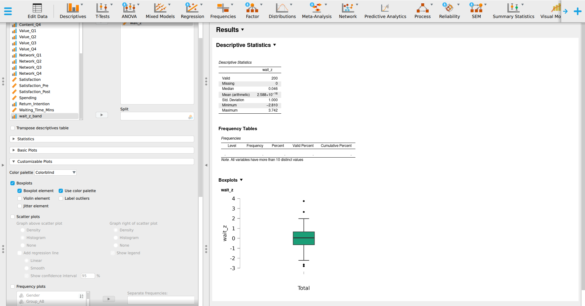
Read the row observations with |z| > 2, which should be 7, and the note beneath the table, which names the row with the largest z-score: row 85, a wait of 90 minutes, \(z = 3.74\).
The boxplot beside the histogram shows four points beyond the whiskers, two long waits and two short ones. PocketStat leaves the points unlabelled, so match them with Table 2.11 in the chapter, which lists all seven cases with their z-scores.
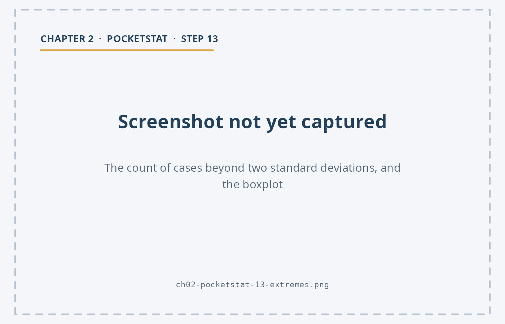
Then answer three questions from your own output:
- How many of the 200 waits are typical, how many unusual and how many extreme? How does that compare with what a normal curve predicts?
- Respondent 85 gave a satisfaction score of 4.50. What would you check before reporting this wait to the manager?
- Five of the seven unusual waits are short. Is a very short wait a problem for the manager? Explain in two sentences.
Activity 4: Output annotation (25 minutes)
An annotation is a short note attached to an output. It states what the output shows and what follows from it. Write it for the service manager. The manager will see the plot, read your note, and skip the table.
Step 14. Add a note to the output
Scroll the output to the distribution plot or the boxplot of Waiting_Time_Mins. Click the small arrow beside the analysis title and choose Add Note. A text box opens under the title. Type your annotation into it.
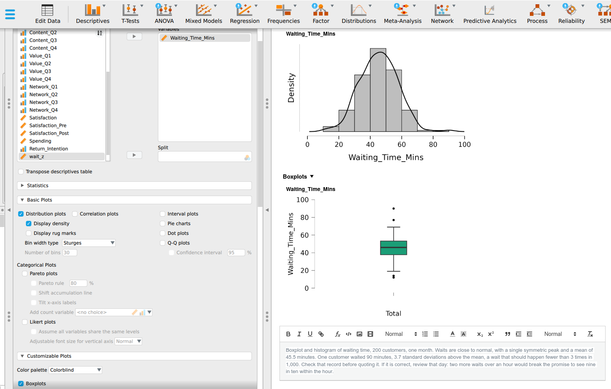
On Results, with the Z-scores & empirical rule output showing, scroll to the card headed Your write-up and type your annotation into the box. PocketStat offers a suggested starting point built from the numbers. Write your own. The write-up travels with the result into the report in step 15.
Your note must be no more than 80 words and must do four things:
- Name the variable and the display the note appears under.
- State the shape in plain words, with one figure as evidence.
- Name one case, or one share of customers, using a z-score or the empirical rule, and say in plain words how rare it is.
- End with a decision or a warning the manager can act on.
What good looks like
Boxplot and histogram of waiting time, 200 customers, one month. Waits are close to normal, with a single symmetric peak and a mean of 45.5 minutes. One customer waited 90 minutes, 3.7 standard deviations above the mean, a wait that should happen fewer than 3 times in 1,000. Check that record before quoting it. If it is correct, review that day: two more waits over an hour would break the promise to see nine in ten within the hour.
The example contains 79 words and stays under the 80-word limit. Each of the four requirements has a specific sentence fulfilling it:
- “Boxplot and histogram of waiting time, 200 customers, one month” names the variable, the display, and the sample.
- “Waits are close to normal, with a single symmetric peak and a mean of 45.5 minutes” states the shape and gives a figure.
- “One customer waited 90 minutes, 3.7 standard deviations above the mean, a wait that should happen fewer than 3 times in 1,000” names the case and turns the z-score into rarity.
- “Check that record before quoting it. If it is correct, review that day” ends with actions the manager can take.
Every figure in the note is the real figure from the file. You should be able to find each one in the outputs you built in activities 2 and 3.